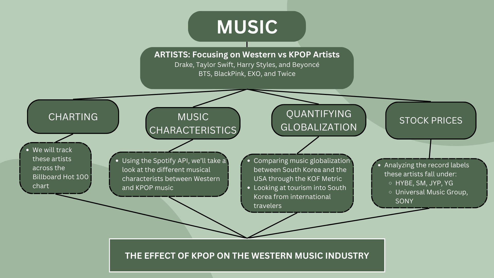
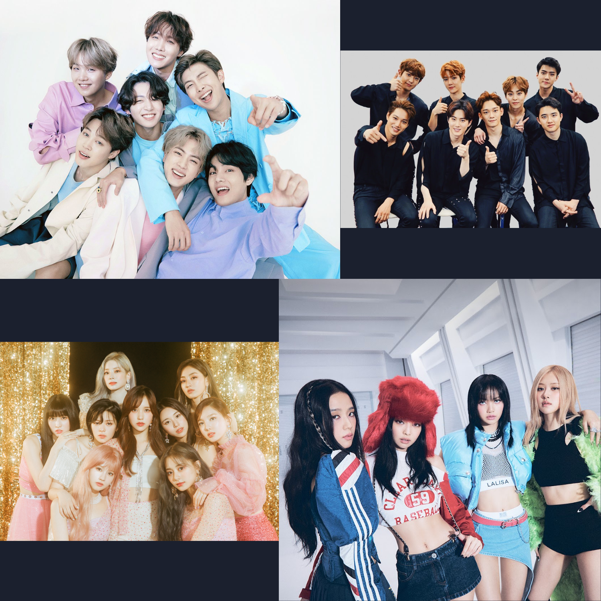

The Effect of KPOP on the Western Music Industry
Music as a representation of culture has been defined since the birth of human connection and communities for centuries. In the past few decades, we have seen a transformation in music listening and sharing, from physical records, to digital purchases, to modern day streaming. Specifically in the United States (U.S.), popular music has, for the most part, been contained to English speaking American artists. In recent years, however, the rise of KPOP, through groups like BTS, EXO, BlackPink, and TWICE has become increasingly popular in Western markets, to the point where it is considered part of the Pop genre Wang (2018). With this new found accessibility of KPOP music through streaming, there comes the question of how music listening and cultural exchange has changed in the U.S.
We can define such a question as the effect of KPOP on the Western Music Industry and its impacts on globalization as a whole. At the moment, there is literature to discuss both viewpoints of music globalization; the first being that streaming has expanded the average U.S. consumer’s music palette from traditional American music, while the second suggests that streaming has only narrowed the average listener’s taste through algorithmic suggestions and playlists Bello and Garcia (2021). Cultural Divergence in popular music suggests that while clustering in music tastes can be noted for specific regions of the world, we do see an “upward trend in music consumption diversity that started in 2017 and spans across platforms” Bello and Garcia (2021).
Thus, in order to fully realize the question of KPOP’s effect on the western music industry through time, I propose analyzing the following: music charting on the Billboard 100, stock prices for music record companies, musical characterists and popularity, and quantifying globalization over time.
Big Picture

To further break down this analysis, I will briefly discuss the artists I will be focusing on and their imapct the music industry thus far.
Western Artists
Drake
Drake is a Canadian rapper, singer, and songwriter who rose to fame in the mid-2000s. He initially gained recognition as a child actor on the teen drama “Degrassi: The Next Generation” prior to transitioning to music. Drake’s debut studio album, “Thank Me Later” (2010), was a commercial success, setting the stage for a number of hit records, including “Take Care” (2011) and “Views” (2016). He is know for his versatile style that blending rap and R&B into a new form of comtemporary rap. Additionally, Drake has consistently dominated the Billboard charts. He holds numerous records, including the most charted songs by a solo artist in the history of the Billboard Hot 100. With multiple Grammy Awards and an extensive list of chart-topping singles and albums, Drake stands as one of the most influential and successful artists in contemporary music “Drake (Musician) - Wikipedia” (2023).
Taylor Swift
Taylor Swift is an American singer-songwriter who began her career as a country music artist before evolving into a global pop superstar. Swift released her self-titled debut album in 2006, marking the beginning of her commercial success. However, it was with albums like “Fearless” (2008) and “1989” (2014) that she achieved widespread acclaim. She is knwon for her heartfelt songwriting and relatable lyrics and has won numerous Grammy Awards, including Album of the Year for “Fearless” and “1989.” She holds several Billboard records, including being the first woman to replace herself at the top of the Hot 100 chart with “Blank Space” succeeding “Shake It Off”. More recently, she has once again broken records with her re-recorded albums as a result of legal battle with her previous label, Big Machine, taking full ownership of her masters. She has also had one of the most successful tours in music industry this year with her 2023 tour, the Eras Tour. With an impressive catalog of chart-topping hits, Taylor Swift remains one of the most influential and successful artists in the music industry “Taylor Swift - Wikipedia” (2023).
Harry Styles
Harry Styles is an English singer, songwriter, and actor who initially gained fame as a member of the globally successful boy band, One Direction. After the group’s hiatus in 2016, Styles started his solo career and made a notable shift to a more eclectic and mature musical style. His self-titled debut solo album, released in 2017, showcased his versatility and garnered critical acclaim. Styles continued his success with the release of “Fine Line” in 2019, and “Harry’s House” in 2022. Billboard achievements include chart-topping singles and albums, with “Watermelon Sugar” and “As it Was” earning him number 1’s on the Billboard Hot 100. Recognized for his distinctive voice, charismatic stage presence, and fashion-forward style, Harry Styles has established himself as a prominent figure in the music industry “Harry Styles - Wikipedia” (2023).
Beyoncé
Beyoncé is an iconic American singer, songwriter, actress, and producer who first gained fame as the lead vocalist of Destiny’s Child, one of the world’s best-selling girl groups of the early 2000’s. Embarking on a solo career shortly after, Beyoncé has consistently pushed boundaries with her music, incorporating R&B, pop, and hip-hop influences. Her solo debut album, “Dangerously In Love” (2003), marked the beginning of a highly successful solo career. She has earned numerous Grammy Awards and achieved remarkable Billboard success, holding records for the most No. 1 hits by a female artist in the Hot 100 chart. Recnetly, she continued to break records with the release of her album “Reniassance” and its accompanying tour. Renowned for her powerful vocals, dynamic performances, and impactful cultural influence, Beyoncé stands as one of the greatest entertainers in modern music history “Beyoncé - Wikipedia” (2023).
These four artists have transformed the music industry for the past decade and continue to break records in the music industry.
KPOP Artists

BTS
BTS, short for Bangtan Sonyeondan, is a South Korean boy band that has become a global phenomenon. Formed by Big Hit Entertainment in 2013, the group consists of members RM, Jin, Suga, J-Hope, Jimin, V, and Jungkook. BTS has been the trailblazer in the K-pop genre into the Western world, achieving unprecedented success worldwide. Their music blends various genres and addresses diverse themes, resonating with a massive and dedicated fanbase known as the ARMY. BTS has garnered multiple Billboard achievements, including numerous chart-topping albums and singles. Their track “Dynamite” made history by becoming the first song by a Korean act to debut at No. 1 on the Billboard Hot 100. With this success, they transformed the small company, Big Hit Music, into HYBE, a record label that represents both KPOP and Western artists around the globe. Beyond music, BTS has been recognized for their philanthropy, advocacy, and positive influence, solidifying their status as global cultural icons “BTS - Wikipedia” (2023).
BlackPink
BlackPink, a South Korean girl group formed by YG Entertainment (one of the former “Big 3” KPOP record labels), comprises of members Jisoo, Jennie, Rosé, and Lisa. Debuting in 2016, BlackPink quickly gained international prominence with their pop and hip-hop-infused music. Their breakthrough came with hits like “Boombayah” and “Whistle.” The group continued to make waves with successful releases such as “DDU-DU DDU-DU” and “Kill This Love.” Their Billboard achievements include impressive chart positions and record-breaking views on YouTube. Additionally, BlackPink became the first K-pop girl group to perform at the Coachella Music Festival in 2019. BlackPink has solidified their status as one of the most influential and popular K-pop acts worldwide “Blackpink - Wikipedia” (2023).
EXO
EXO, a South Korean boy group formed by SM Entertainment (one of the former “Big 3” KPOP record labels), debuted in 2012 and became a powerhouse in the K-pop industry. The group originally consisted of 12 members but later downsized to nine: Xiumin, Suho, Lay, Baekhyun, Chen, Chanyeol, D.O., Kai, and Sehun. EXO achieved widespread success with albums like “XOXO” and “EXODUS.” While their primary success has been in the Asian market, with numerous chart-topping hits, they also made a mark internationally. While their presence on Billboard may not be as extensive as some Western artists, EXO has garnered notable achievements, solidifying their status as one of K-pop’s most influential groups “EXO - Wikipedia” (2023).
Twice
Twice, a South Korean girl group formed by JYP Entertainment (one of the former “Big 3” KPOP record labels), made their debut in 2015 and quickly became one of the leading acts in the K-pop industry. Comprising members Nayeon, Jeongyeon, Momo, Sana, Jihyo, Mina, Dahyun, Chaeyoung, and Tzuyu, Twice gained recognition for their infectious pop tunes and engaging performances. They secured their position as one of the best-selling girl groups in South Korea. While Twice has predominantly found success in the Asian market, they have also made notable strides globally, amassing a dedicated fanbase called “Once.” Although they may not have extensive Billboard achievements compared to some Western counterparts, Twice has undeniably left a significant impact on the global pop scene “Twice - Wikipedia” (2023).
Why is this Important?
As we progress as a society to be more diverse and inclusive of all races, genders, and ethnicities within the Western world, we should also start to see that shift in our music and media. Thus, from a social persepective, we must ask whether popular music will start to shift to reflect the average listener of the future. By examining KPOP’s effect on the Western music industry, an industry traditionally confined to the U.S and the English langauge, we can begin to analyze whether globalization has also effected music and how it has changed over time. Therefore, to structure our in-depth analysis of this topic through the four branches discussed above, we will be answering the following questions.
Thought-Provoking Questions
How do Western Artists compare to KPOP on the Billboard Hot 100 over time?
What can be said about the musical characteristics between Western and KPOP artists?
What is the relationship between cultural globalization in the U.S. and South Korean international tourism?
Is KPOP as a whole propelling into the West or is it a a specific artist/group?
Does HYBE seem to fall under the Western music industry, the KPOP industry, or are they in a new league?
Accounting for volatility, will HYBE continue its current success, specifically in comparison to the traditionally Western labels?
Can we predict popularity of KPOP verses Western music in the coming years?
Has cultural globalization been impacted since the onset of KPOP in West?
How do musical characterists effect forecasted popularity between Western and KPOP artists?
What combined conclusions can be drawn from the four analytical venues demonstrated in the big-ideas chart?
Next, we will dive into the data sources used to complete our analysis